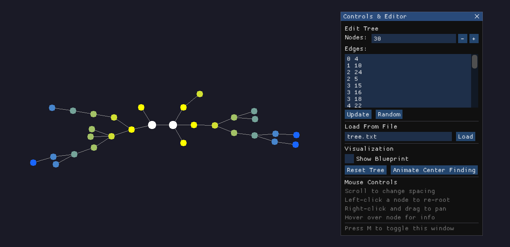

Project Overview
This project is an interactive C++ application for visualizing free trees, which are undirected, acyclic graphs. It utilizes a radial layout algorithm to arrange nodes in a visually appealing circular pattern. The application is built using modern C++ and leverages libraries like OpenGL for rendering, GLFW for window and input management, and ImGui for creating a graphical user interface.
The core of the application allows users to generate, load, and manipulate tree structures in real time, with smooth animations providing visual feedback for every change.
Features
Tree Generation and Management
-
Random Tree Generation:
Through the GUI, we can specify the number of nodes
and click the "Random" button. This triggers the
R1Tree::generateRandomTreefunction, which uses a Prüfer sequence to create a valid tree structure. -
Load from File:
We can load a tree structure from a text file using
the "Load" button. The format is an integer
Non the first line for the number of nodes, followed by lines of edge pairs likeu v. This is handled byR1Tree::loadTreeFromFile. - Live Tree Editing: The GUI includes a multiline text box displaying the current tree's edge list. We can manually add, remove, or modify edges and click "Update" to apply the changes. The application parses this text, builds a new tree, and animates the transition from the old layout to the new one.
Interactive Visualization and Controls
-
Radial Layout Algorithm:
The primary layout is a radial or polar arrangement.
The application first finds the true center of the
tree and places it at the origin. Subsequent nodes
are placed on concentric circles based on their
depth from the center, with their angular position
determined by the width of their subtree. This is
implemented in
calculateTrueCenterLayoutanddrawSubTree. -
Interactive Rerooting:
By left clicking any
node, the user can instantly make it the new root of
the tree. The code recalculates the entire layout
from this new perspective and smoothly animates all
nodes to their new positions. This is handled in
mouse_button_callbackby callingcalculateLayoutFromRoot. - Smooth Panning: Users can right click and drag the mouse to pan the camera across the scene, allowing for easy movement for large trees.
-
Dynamic Spacing:
By using the
mouse scroll wheel,
one can increase or decrease the spacing between the
concentric layers of the tree. This adjusts the
DELTAvalue in theR1Treeclass, which triggers a relayout and animation to the new scale. - Node Tooltip: Hovering the mouse over a node displays a tooltip with key information: its unique ID, its depth relative to the current root, and the width of its subtree, meaning the number of leaf nodes it contains. The hovered node and its entire subtree are also highlighted.
Animations
-
Smooth Transitions:
Almost every action that changes the tree's layout,
like rerooting, updating the structure, or changing
spacing, is animated. The
Animatorclass inanimate.hperforms a time based linear interpolation (lerp) between the start and end positions of each node, for a smooth animation. -
Center Finding Animation:
The project includes a feature to visualize the
algorithm for finding the center. The application
iteratively prunes the leaf nodes of the tree,
generation by generation. Pruned nodes are faded
out, showing how the algorithm converges to the
central one or two nodes. This state is managed by
the
AppState::ANIMATING_FIND_CENTERenum and implemented inprepareFindCenterAnimation.
Technical and GUI Features
- GUI: The control panel is built using ImGui, a powerful and easy to use library for creating GUI in C++.
- Layout Blueprint: A "Show Blueprint" checkbox in the GUI toggles the visibility of the underlying geometric framework used by the radial layout algorithm. When enabled, it draws the concentric circles and the angular wedges allocated to each subtree.
-
Legacy Graphics Primitives:
The rendering of lines using Bresenham's algorithm
and circles with the Midpoint circle algorithm is
implemented from scratch using legacy immediate mode
OpenGL. This is found in
graphics.h.
References and Libraries
- R1 Algorithm: This algorithm is a specific type of radial drawing, a method described in the paper Drawing Free Trees by P. D. Eades.
- OpenGL: The core graphics API used for rendering.
- GLFW: A multiplatform library for creating windows, contexts, and managing input.
- GLAD: An OpenGL Loading Library used to access modern OpenGL functions.
- ImGui: A bloat free GUI library for C++.
- CMake: A cross-platform build system used to manage the build process.
Project Structure
main.cpp initializes OpenGL and handles the
main application loop. It uses ImGui for the control
panel GUI and GLFW for window management and input
handling.
graphics.h contains the implementation of
midpoint algorithms for drawing lines and circles using
immediate mode OpenGL. It also has a variant for filled
circles, where we loop over and fill in all pixels
between two boundary pixels at the same y-coordinate.
animate.h defines the
Animator class, which manages smooth
transitions of node positions using linear interpolation
over time.
tree/tree.cpp defines functions for
loading, generating and manipulating tree structures.
tree/treeLayout.cpp contains the radial
layout algorithm and functions for calculating node
positions based on the tree structure while
tree/treeRender.cpp has functions for
rendering the tree, including nodes, edges, and
highlights.
We used CMake as our build system, which is configured
in CMakeLists.txt. While OpenGL, GLUT and
GLFW need to be installed as system libraries, other
dependencies like GLAD and ImGui are included as
submodules in glad/ and
imgui/.
Algorithms Used
R1 Algorithm
The implemented layout is a radial drawing algorithm that arranges the tree on a series of concentric circles. To ensure a balanced and symmetric visualization, it begins by finding the "center" of the tree and designates it as the root.
The algorithm then determines the final position for each node in two phases:
- Bottom-Up Traversal: It first traverses the tree to calculate the "width" of each subtree, defined by its number of leaves. This width determines the size of the angular wedge each branch will occupy.
- Top-Down Traversal: A second, top-down traversal places each node on a circle corresponding to its depth from the root, positioned angularly within its assigned wedge.
This two-phase process guarantees a planar drawing with no edge crossings.
Since calculating the final position of the current node
is done in constant time and every node is visited
exactly once in both traversals, the overall time
complexity of the algorithm is O(N), where
N is the number of vertices in the tree.
Random Tree Generation
For generating a random tree, we first generate a random
Prufer sequence of length N - 2, where
N is the number of nodes. Every integer in
the sequence is chosen uniformly at random from the
range [0, N - 1].
This sequence is then converted into a tree by
connecting nodes based on the values in the sequence.
Since the Prufer sequence is generated uniformly at
random and there is a bijection between Prufer sequences
and labelled trees, this method guarantees a uniform
distribution over all possible tree structures with
N nodes.
While generating the Prufer sequence is an
O(N) operation, converting it to a tree
involves O(N^2) operations, which is the
overall time complexity of this process.
Performance
Apart from the algorithms discussed above, there are two other important processes from a performance perspective:
-
Rendering: Each
frame iterates through all nodes and edges to draw
them, resulting in an
O(V+E)operation, which isO(N)for a tree. -
Animation: The
animation update loop in
Animator::updateiterates over all nodes, making it anO(N)operation per frame.
To measure performance, we look at these three values:
- Time to first frame: This is the time taken to finish drawing the first frame and includes any prior initialisation and setup (window creation, tree generation etc.)
-
Draw time: This
is the (average) time taken by the
renderer->draw(...)call that draws the actual tree. - Tree generation time: This is the (average) time taken by the random tree generation algorithm.
For different values of N, we get the
following results:
| N | Time to first frame (ms) | Draw time (ms) | Tree generation time (ms) |
|---|---|---|---|
| 10 | 333.957 | 0.496 | 0.024 |
| 20 | 335.955 | 0.752 | 0.031 |
| 50 | 337.753 | 1.623 | 0.052 |
| 100 | 343.572 | 3.218 | 0.167 |
| 500 | 347.376 | 9.445 | 1.387 |
| 1000 | 349.019 | 14.197 | 3.583 |
| 2000 | 380.475 | 24.287 | 9.091 |
| 5000 | 446.565 | 60.581 | 53.393 |
As expected, the time to first frame remains relatively
constant since it is dominated by fixed overheads like
window creation and OpenGL initialisation. For example,
the initial glutInit() call itself takes
around ~70 ms on its own.
We can see that the tree generation time grows much
faster than the draw time, which is expected since the
former is O(N^2) while the latter is O(N), with both
becoming comparable for very large trees (5000 nodes).
From a user's perspective, both tree generation and
panning are very smooth for smaller trees, though tree
generation becomes slightly noticeable at
N = 2000 and panning around starts lagging
a bit at N = 5000.
Issues and Coding Challenges
-
Legacy OpenGL Pipeline Limitations:
The drawing functions in
graphics.huse immediate mode OpenGL (e.g.,glBegin/glEnd), which is deprecated. This caused issues when trying to attempt to use shaders for more aesthetic effects (like glow around nodes), but shaders are a core feature of modern OpenGL and are incompatible with the legacy functions used in this project. -
Pseudocode Bugs:
While the description of the R1 algorithm in the paper is clear, there were some ambiguities and minor errors in the provided pseudocode.
For example, in the case of two centers, the given pseudocode does two calls to
drawSubTreewith angles(3π/2, π/2)and(π/2, 3π/2). Since every node is drawn at the point with radial part(α1 + α2) / 2, both centers were drawn at the same coordinates, leading the entire tree drawing to become non-planar and messy.Reading through the description leads to the conclusion that we need to draw at the point between
α1andα2(when taken in anti-clockwise order), which is not necessarily at(α1 + α2) / 2. Replacing the first function call with(-π/2, π/2)fixes this issue, leading to the first center being drawn at the point with radial part 0.
Screenshots
N = 50 nodes